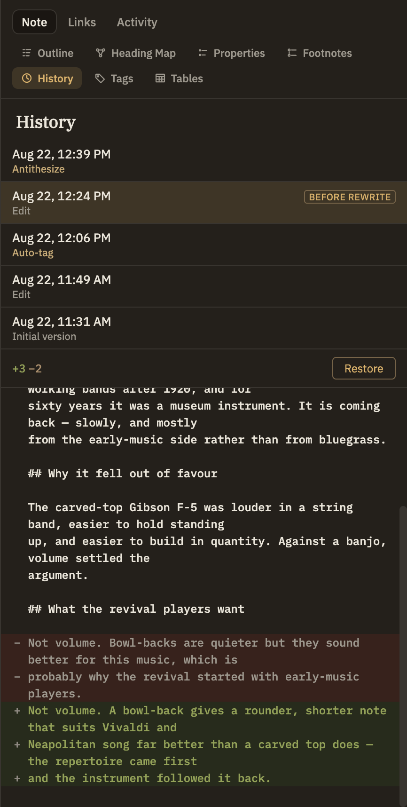
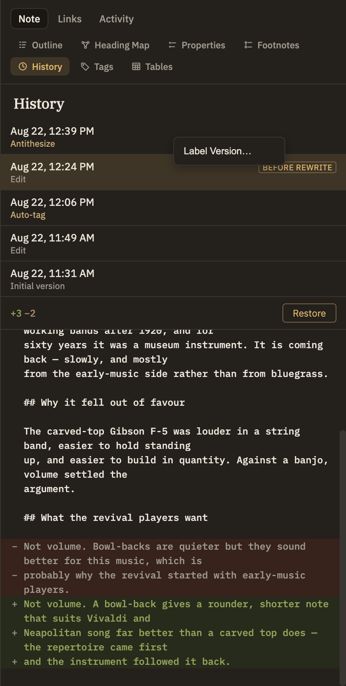

Docs/Right sidebar/History
History
Every time a note is saved, Minerva keeps a copy of what it looked like before. This panel is where you read that record: a list of versions with the date, the time, and a line saying what produced each one — your own edit, a thinking tool, a restore. Pick a version to see what changed since, and put it back with one click if you'd rather have it.
Nothing here needs setting up, and none of it is a commit. History is kept automatically, on this machine, for every note — including the .csv, .ttl and .py notes, not just the markdown ones. It lives in the .minerva folder beside your notes and never leaves your computer, so it isn't part of publishing and doesn't travel with a note you export.
Reading the timeline
Versions are listed newest first. Each row carries two lines: when the version was saved, and what caused it.

Comparing and restoring
Click any version to compare it with the note as it stands now. The count at the top says how many lines would be added and removed, and the lines themselves are listed below — added in green, removed in red.
Naming a version
A date and time tells you when something happened, not why it mattered. Right-click any version and choose Label Version… to give it a name — before rewrite, submitted draft, last good copy — and it becomes easy to find weeks later. Right-clicking a version that already has one offers Rename Label… and Remove Label instead.
Unnamed versions are dropped once they age out of the retention window or fall off the per-note limit (see Settings → Versioning). A named version is exempt from both — naming one is how you keep a particular state of a note indefinitely.

Naming several notes at once
A restore point is often bigger than one note. In the Notes panel, select the notes (or a folder) you're about to change, right-click and choose Label Version…: the current version of every note in the selection gets the same name. One name, one moment, however many notes — the thing to reach for before a refactor or a big AI-assisted pass.
Nothing is written into the notes themselves; the name is attached to their history, exactly as it would be from this panel. Notes that can't be labelled are reported afterwards, and the rest still get their restore point.
How much is kept
By default a note keeps its unnamed versions for 30 days, up to 500 of them, and files over 1 MB aren't recorded at all. All three are adjustable — see Settings → Versioning.